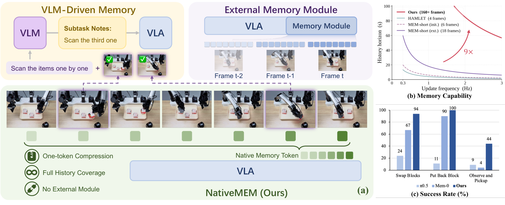
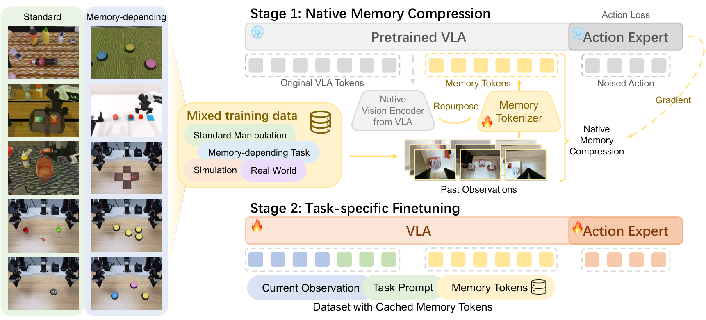
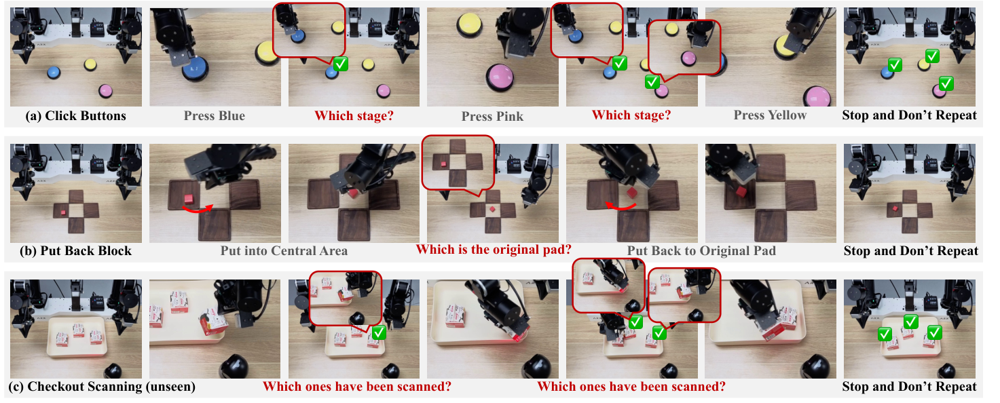
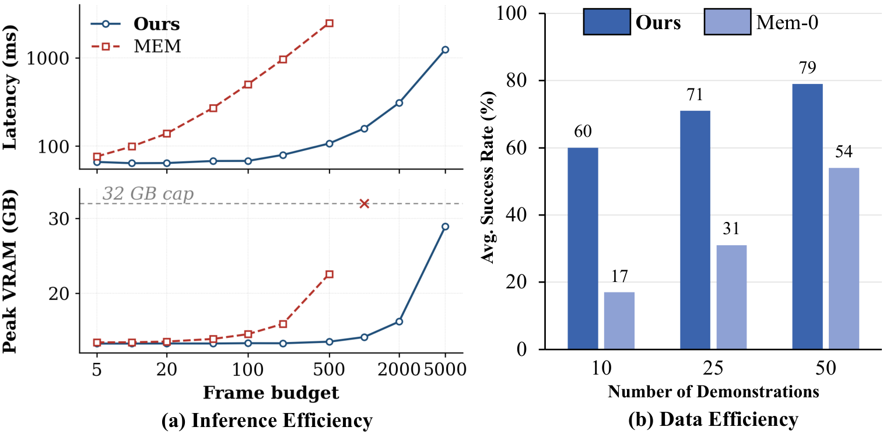

能拿到：一个与预训练 \(\pi_{0.5}\) 权重同空间的「帧 → 单 token」压缩器，训练完就能把任意长度的历史拼进原始输入序列，不需要新模块、不需要检索、不需要额外规划器；仿真 5 任务平均从 32.4% 提到 84.0%。代价：每个「帧\(\times\)视角」只有一个 token，空间细节必然被丢；tokenizer 与 \(\pi_{0.5}\) 视觉塔版本强绑定，换 backbone 就得重训 Stage 1（约 4000 条轨迹、4\(\times\)H100、16 小时）。
- 最小可复用件
- 「帧 → 单 token」的 memory tokenizer：以策略视觉编码器初始化 \(E_{\mathrm{mem}}\)，加 1 个可学习 query \(q_{\mathrm{mem}}\)、1 个线性投影 \(W_{\mathrm{mem}}\)、1 个记忆起始符 \(b_{\mathrm{mem}}\)；只用冻结策略的动作损失训练，不用重建损失。
- 主要风险
- 单 token 的信息上限（需要读字符、数细小物体的任务几乎无解：Press Button 仅 5%）；对 backbone 视觉塔与 token 维度强绑定；Stage 1 的一次性重训成本不低，且训练数据配比（标准操作 vs 记忆型任务）未给出。
- 复现门槛
- \(\pi_{0.5}\) 权重；约 4000 条仿真+真机混合轨迹；Stage 1 = 50k step / batch 16 / lr 5e-5 / 4\(\times\)H100 约 16 h；Stage 2 = 20k step / batch 32 / 2\(\times\)H100 约 5 h，仿真 50 条、真机 100 条任务演示。
1 核心摘要
问题出在「反应式策略 + 长时程记忆」这对矛盾上。预训练 VLA 大多只条件于当前观测与指令，而操作任务经常是非马尔可夫的：同一张当前图像，在不同历史下应当对应不同动作（论文 Eq. 2 直接把这种情形写成存在两条历史使最优动作不同）。已有两条路线都不理想：一条把记忆外包给高层 VLM，用文本子任务笔记驱动低层 VLA，代价是子任务描述需要昂贵的标注，而且细节难以用语言忠实编码；另一条在策略内部新建记忆模块（循环状态、压缩历史、检索式记忆库），代价是新模块在预训练阶段从未见过，既有掉点风险，又躲不开「压得不够贵、压得太狠丢关键细节」的两难。
NativeMEM 的做法是把压缩推到极端并塞回原空间：直接复用 VLA 自己的视觉编码器，把每个历史帧的每个相机视角压成一个 token（即 \(M = 1\)），拼到原始输入序列尾巴上，让预训练策略用自己原本的 attention 去读历史。关键手段是训练目标：tokenizer 不重建图像、不做蒸馏、也不做对比学习，而是用冻结 VLA 的原生动作损失做监督，所以 token 学到的是「对动作有用」的信息，而不是「看起来像原图」的信息。训练分两段：Stage 1 冻结策略只训记忆分支，在约 4000 条仿真+真机混合轨迹上得到通用 tokenizer；Stage 2 冻结 tokenizer、离线缓存 token，再用目标任务少量演示全量微调 VLA。
数字上：仿真 5 个任务平均成功率从 32.4%（Mem-0，最好的先前基线）提到 84.0%；真机 3 个任务最终阶段平均从 34.7%（\(\pi_{0.5}\) + RTC）提到 98.7%；效率上 32 GB 显存内可挂 5000 帧历史，100 ms 延迟约束下仍能看约 200 帧；消融显示把 Stage 1 换成均值池化视觉特征会掉到 58.0%，Stage 1 不冻结策略则塌到 23.2%。判定：这是「记忆表征」这一格目前最干净的一刀——不改架构、不做检索、只加 token，可作为长时程记忆的强基线；但它把「记住什么」全部押在单 token 的容量与动作损失的间接监督上，遇到需要精细空间证据的任务会露出天花板。
2 记忆环节定位
主命中「记忆表征」：整篇论文的技术重心就是把一帧一视角压成一个 token，并让它落在预训练策略的 token 空间里。部分命中三格：写入触发是固定频率（推理时每 10 个控制步更新一次），没有任何事件检测或显著性触发；动作接口靠的是把记忆 token 拼进序列、由 action expert 通过原有 attention 读，没有专门的记忆读出头；长期维护体现在「每帧一 token 让分钟级历史变得可承担」，但论文没有给出遗忘/淘汰策略。完全不命中「索引检索」：没有相似度检索、没有 key-value 记忆库、没有门控，每次动作预测都把当前记忆队列全量拼上。
| 维度 | 内容 |
|---|---|
| 输入 | 历史帧的每个相机视角图像 \(o^v_\tau\)、当前观测 \(o_t\)、本体状态 \(s_t\)、语言指令 \(\ell \) |
| 记忆单位 | 一个「帧 \(\times\) 相机视角」= 一个 token \(m^v_\tau = W_{\mathrm{mem}} \cdot \hat q^v_\tau\)；整条记忆序列前置一个可学习起始符 \(b_{\mathrm{mem}}\) |
| 写入频率 | 推理时每 10 个控制步更新一次（机器人 30 Hz，动作 chunk 50 步）；训练时每样本取首帧 + 8 个近期帧（间隔 8~16 step）+ 当前帧 |
| 读取条件 | 无条件全读：只要有动作预测请求，就把当前记忆队列整体拼在观测与 prompt token 之后（论文 Eq. 8） |
| 输出 | 不做独立输出，记忆只作为额外上下文进入策略；策略照旧输出动作 chunk |
| 在线性 | 因果：记忆索引集 \(I_t\) 显式约束 \(\tau \leq t\)，不使用未来帧、不使用 oracle 状态；tokenizer 与策略推理解耦，可独立按更高频率刷新 |
| 容量与遗忘 | 论文未给出显式容量上限或淘汰规则，只描述为「compact memory queue」；效率实验把历史推到 5000 帧。淘汰策略：未在已核验的公开材料中确认 |
一句话概括它的定位：它是「把历史变成策略能直接读的稠密上下文」这一派的最简实现，跟需要显式读写指针的记忆库方法（如 ReMem-VLA 的循环记忆查询）不同——它没有任何「查询」动作，历史是被动地一直挂在那里。

Figure 1：(a) 对比三种记忆路线；(b) 记忆更新频率与可覆盖历史长度的关系；(c) 三个记忆任务的阶段成功率。
3 问题与动机
论文把失败模式写得很具体，不是「效果不够好」这种空话，而是三类可观测的退化：
第一类，完全不会记。预训练 \(\pi_{0.5}\) 在仿真 Click Buttons 上成功率 0%，在 Click Buttons (hard) 上 0%，真机 Click Buttons 最终阶段只有 2%。任务要求按顺序按三个按钮且不许重复，单帧策略在当前画面里根本看不出「哪几个已经按过」。
第二类，记忆被语言或短窗口截断。MemER（VLM 检索关键帧 + 文本指令）仿真平均 10.4%，真机 Put Back Block 最终阶段 12%，因为文本子任务描述难以承载「原来的垫子是哪一个」这类视觉证据；MEM-short* 在真机上不稳定，作者描述为「在有限真机数据下偶尔会退化掉预训练 VLA 的操作能力」（真机平均 30.7%）；Mem-0 在仿真靠 Swap Blocks 67%、Put Back Block 90% 撑起 32.4% 的平均，但真机三个任务最终阶段全 0，说明层次化规划器的记忆在真机分布上直接失效。\(\pi_{0.5}\) + RTC 用时间维的动作连续性把真机平均从 14.7% 拉到 34.7%，但论文明确指出它「利用的是动作时间连续性而非显式记忆过去观测」，所以在需要显式回忆的后期阶段仍然掉。
第三类，把历史原样塞进去代价爆炸。论文给出记忆长度的标度 \(|M_t| = V \cdot T \cdot N \cdot M\)（V 相机数、T 历史秒数、N 每秒更新帧数、M 每帧 token 数），并给了实测对照：\(\pi_{0.5}\) 全量微调 + 4 帧历史（Native History，\(K=4\)）就要 \(5 \times 3 \times 256 = 3840\) 个视觉 token，\(K=8\) 要 \(9 \times 3 \times 256 = 6912\)，论文说这已经超出训练容量。更关键的是，即使塞得进去也没用：\(K=4\) 的 Native History 在 Swap Blocks / Put Back Block / Observe and Pickup 上只有 9% / 18% / 20%，远低于 NativeMEM 的 94% / 100% / 44%。这条对照很重要——它说明收益不是「多给了历史」本身，而是「历史被压缩成策略能消化的一 token 摘要」。
| 路线 | 代表 | 记忆载体 | 论文描述的失效模式（带报告值） |
|---|---|---|---|
| VLM 驱动记忆 | MemER、Mem-0 | 关键帧 + 文本子任务 | 子任务标注昂贵、细节难用语言承载；真机三任务最终阶段 0%（Mem-0） |
| 外部记忆模块 | HAMLET*、MEM-short* | moment token / 短时视频记忆 | 需改架构，与预训练权重不兼容；仿真平均 9.0% / 12.8%，真机 MEM-short* 偶发退化 |
| 无压缩历史 | Native History (\(K=4\)) | 原分辨率视觉 token | 3840 token 起步、\(K=8\) 超容量，且三个任务只有 9%/18%/20% |
| 原生单 token 压缩 | NativeMEM | 每帧每视角 1 个原生视觉 token | 论文自陈：需要字符识别/精细计数的任务仍失败（Press Button 5%） |
于是动机可以收成一句：如果记忆的载体和策略原本的视觉 token 是同一个东西，那么「兼容性」问题就自动消失了，剩下的只有「一个 token 够不够」。论文把后者交给动作损失去回答，而不是靠设计更复杂的记忆结构。
4 方法拆解
4.1 输入与记忆序列的构造
策略仍是 \(\pi_{0.5}\) 的多视角输入：\(o_t=\{o_t^v\}_v\)，V 个相机视角，加上本体状态 \(s_t\) 与指令 \(\ell \)。记忆的构造分三步。第一步，用一个以策略视觉编码器初始化的 \(E_{\mathrm{mem}}\) 编码历史帧的 patch token 序列 \(P^v_\tau\)，并在其前面拼一个可学习 query：
也就是让一个 query token 在编码器内部把整幅图的 patch 聚合掉，输出维度再经 \(W_{\mathrm{mem}}\) 线性映射回 VLA 的 token 维度。第二步，按索引集 \(I_t\) 把跨时间、跨视角的 token 串起来，前面加一个可学习的记忆起始符：
第三步，拼到原输入后面：\(x_t = [x^obs_t, x^prompt(\ell , s_t), M_t]\)。整个过程中策略架构零改动——没有新层、没有新注意力、没有新的位置编码表，历史就是「一些额外的视觉 token」。
训练时的采样策略值得抄：每个样本取回合第一帧 + 8 个近期帧（间隔 8~16 step 采样）+ 当前帧。首帧提供粗粒度的任务初始化上下文（比如「物品最初摆在哪」），近期窗提供状态变化与进度，当前帧的加入让 tokenizer 对「当前」和「过去」学出统一的帧级摘要行为——这一点很重要，否则测试时当前帧与训练时的记忆帧分布会错位。
4.2 训练目标：动作监督，而非重建、蒸馏或对比
这是本页认为最该被复用的一个判断。作者明确写「tokenizer 用 VLA 原生动作预测损失优化，没有重建目标、也没有额外记忆监督」，摘要里也点明「action-supervised rather than reconstruction-supervised」。形式上是：
\(min_{\phi _{\mathrm{mem}}, q_{\mathrm{mem}}, W_{\mathrm{mem}}, b_{\mathrm{mem}}} E[ L_{\mathrm{act}}( \pi _\theta (\cdot | o_t, s_t, \ell , M_t), a_t ) ]\)，其中 \(\theta\) 固定
梯度只能更新记忆分支，于是 token 被迫编码「能降低动作误差」的信息，同时被拉进冻结策略的 token 空间。论文还给了反面证据：如果 Stage 1 不冻结 VLA（"Unfrozen VLA"），模型会直接去适配策略本身而不是逼记忆分支压缩，结果平均只有 23.2%（Put Back Block 直接 0%）。另一条反面证据是跳过压缩、改用视觉编码器的均值池化特征当记忆 token（"w/o Stage1"）：平均 58.0%，但在 Put Back Block（17%）和 Observe and Pickup（7%）上几乎失效——通用视觉特征能带粗粒度上下文，但保不住长程回忆需要的那点细节。
Stage 1 的具体配置：冻结预训练骨干与 action head，只训记忆分支，50k step、batch 16、lr 5e-5，约 4000 条仿真+真机轨迹，4\(\times\)H100 约 16 小时。数据是「标准操作 + 记忆型任务」的混合，前者维持与预训练操作先验的兼容，后者逼 tokenizer 编码当前观测里没有的历史。
4.3 单 token 的信息上限，与多相机如何组织
\(M = 1\) 是一个刻意选的极端。它换来的是：V 个视角、T 秒、N Hz 的历史只占 \(V \cdot T \cdot N\) 个 token，于是「分钟级、160 帧以上」的历史在上下文里是可行的；代价是每帧每视角只有 1 个向量，空间结构必须被压进一个定长表示。论文用注意力可视化间接回答「压掉了什么」：tokenizer 的空间注意力稳定落在操作相关区域——Put Back Block 上集中在方块与其对应垫子，且在 Stage 1 完全没见过的 Grocery Checkout Scanning 上也仍盯着前景物体、尤其是即将被抓取的物品（Figure 5）。作者据此论证 token 是「原生视觉证据」而不是外部记忆状态。
多相机的组织方式很朴素：每个视角各出一个 token，因此同一时刻的记忆长度是 V；视角之间没有融合、没有跨视角注意力，靠的是策略自身的 attention 在序列里自己关联。这里有两个论文没有明说、但实现时必须自己定的点：其一，压缩后不保留显式时间戳，也不保留相机 id 嵌入——时间与视角信息只由拼接顺序承载（原文 Eq. 7 用的是集合记号，内部展开顺序未在正文明确写出，按实现惯例应为先 \(\tau\) 后 v，此为本页推断）；其二，没有相对时间编码，所以「第 3 帧」与「第 300 帧」在 token 内容上无法区分，只能靠位置隐含。对需要精确时序推理的任务，这是一个真实的隐患。
从成本侧看，序列长度变成 \(L_{\mathrm{obs}} + L_{\mathrm{prompt}} + V\cdot |I_t|\)，而 attention 是长度平方级：挂 200 帧 \(\times\) 3 视角 = 600 个额外 token，已经与观测 token 同量级；挂 5000 帧就是 15000 个 token，这也是为什么 Figure 4(a) 的延迟曲线在 500 帧之后开始明显上翘。
4.4 两阶段流水线与在线推理边界
Stage 2（任务微调）：先用训练好的 tokenizer 把目标任务的演示离线预处理成缓存 token（每帧每视角一个），训练时按预设时间间隔取缓存、按 Eq. 7 组序列、按 Eq. 8 拼接，然后从预训练 \(\pi_{0.5}\) 初始化、加载 Stage 1 的 \(W_{\mathrm{mem}}\) 与 \(b_{\mathrm{mem}}\)，微调 20k step、batch 32，仿真 50 条 / 真机 100 条演示，2\(\times\)H100 约 5 小时。此时 tokenizer 编码器固定（因为输出已缓存），可训练的是 VLA 骨干、action head 和记忆投影。这个「编码器冻结 + 缓存」的设计同时解决了两个工程问题：训练时不必反复跑 tokenizer，存储与 I/O 也远小于存稠密视觉 token。
回答任务书要求的四个必答点，逐条落到原文：
- tokenizer 与策略是否联合训练：不联合。Stage 1 冻结策略只训记忆分支，Stage 2 冻结 tokenizer 只训策略，两段之间靠 \(W_{\mathrm{mem}}\)/\(b_{\mathrm{mem}}\) 继承保持衔接。
- 是否保留时间戳 / 相机 id：正文未描述任何时间戳或相机 id 嵌入，只有可学习的 \(b_{\mathrm{mem}}\) 作为记忆段起始标记；顺序信息由拼接顺序隐式承载。
- 历史长度上限：无显式上限。评测中讲「超过 160 帧、分钟级」；效率实验把 frame budget 推到 5000 帧，32 GB 显存内仍可运行。
- 推理延迟实测：Figure 4(a) 给出延迟-帧数曲线（对数横轴）。按图读近似：5 帧约 60 ms，100 帧内基本持平，约 200 帧仍在 100 ms 以内，500 帧约 150 ms，2000 帧约 300 多 ms，5000 帧约 1.2 s；峰值显存 5000 帧不到 30 GB。作为对照，MEM 在约 500 帧就顶到 32 GB 上限（图中标了红叉）。这些是读图近似值，原文只把「5000 帧 / 32 GB」与「约 200 帧 / 100 ms」写成了文字结论。

Figure 2：Stage 1 冻结 VLA、训练 memory tokenizer；Stage 2 缓存记忆 token，再以当前观测、任务提示和记忆微调 VLA。
5 证据与实验
5.1 仿真：84.0% 的分母是什么
评测集是 3 个 RMBench 任务（Swap Blocks、Put Back Block、Observe and Pickup）加 2 个按钮任务（Click Buttons、Click Buttons (hard)，后者去掉颜色区分，只能靠空间记忆与交互史）。每任务 100 次试验。协议统一：所有方法用同一批目标任务演示、同一评测流程；HAMLET 与 MEM-short 未公开实现，作者按论文复现并在同一个 \(\pi_{0.5}\) 骨干上训练，标为 HAMLET*、MEM-short*。
| 方法 | Click Buttons | Click Buttons (hard) | Swap Blocks | Put Back Block | Observe and Pickup | 平均 |
|---|---|---|---|---|---|---|
| \(\pi_{0.5}\)（无记忆基线） | 0 | 0 | 24 | 11 | 9 | 8.8 |
| X-VLA | 7 | 12 | 16 | 18 | 9 | 12.4 |
| MemER（VLM 驱动） | 12 | 8 | 18 | 12 | 2 | 10.4 |
| Mem-0（VLM 驱动） | 0 | 1 | 67 | 90 | 4 | 32.4 |
| HAMLET*（外部模块，复现） | 4 | 17 | 11 | 3 | 10 | 9.0 |
| MEM-short*（外部模块，复现） | 0 | 39 | 4 | 15 | 6 | 12.8 |
| NativeMEM | 94 | 88 | 94 | 100 | 44 | 84.0 |
「32.4 → 84.0」的准确含义：32.4% 是 Mem-0 在这 5 个仿真任务上的平均，也是表中除本方法外最高的平均值；它不是 \(\pi_{0.5}\) 的成绩（\(\pi_{0.5}\) 是 8.8%），也不是「所有基线的最好单任务成绩」。84.0% 是本方法在这 5 个任务上的算术平均，其中 Observe and Pickup 只有 44%，是明显的短板——这个数字不能读成「普遍接近满分」。另外要注意 Mem-0 的 32.4% 高度依赖 Swap Blocks（67%）与 Put Back Block（90%）两个任务，在两个按钮任务上分别是 0% 和 1%，所以「平均值接近」掩盖了能力谱系完全不同这一点。
5.2 真机：98.7% 是哪类任务的哪个口径
真机三个任务：Click Buttons（连续按蓝/粉/黄三个按钮且不重复）、Put Back Block（把方块移到中间后放回原垫）、Grocery Checkout Scanning（unseen，扫描商品且不重复、不漏扫，Stage 1 未见过此类任务）。每任务 50 次试验，S1–S3 是逐阶段累计成功率，最后一个阶段即整体成功率。

Figure 3：(a) Click Buttons；(b) Put Back Block；(c) Grocery Checkout Scanning。红框标出当前观测不足以判断下一步的时刻。
| 方法 | Click S1 | S2 | S3 | PutBack S1 | S2 | Scan S1 | S2 | S3 | 整体平均 |
|---|---|---|---|---|---|---|---|---|---|
| \(\pi_{0.5}\) | 16 | 8 | 2 | 72 | 14 | 90 | 58 | 28 | 14.7 |
| \(\pi_{0.5}\) + RTC | 26 | 18 | 16 | 56 | 24 | 74 | 66 | 64 | 34.7 |
| Mem-0 | 36 | 4 | 0 | 0 | 0 | 6 | 0 | 0 | 0.0 |
| MEM-short* | 72 | 52 | 40 | 6 | 0 | 72 | 56 | 52 | 30.7 |
| NativeMEM | 100 | 98 | 96 | 100 | 100 | 100 | 100 | 100 | 98.7 |
「最高 98.7%」的三个限定：其一，98.7% 是三个任务最终阶段成功率的平均（96、100、100 → 98.67），不是八个格子的平均（那样是 99.25），也不是单任务最好值；其二，任务是「按顺序按按钮 / 放回原处 / 扫描商品不重复」这一类进度追踪与位置回忆任务，不涉及精细装配、变形物体或力控；其三，每任务只有 50 次试验，且真机微调只用 100 条演示、约 5 小时、2\(\times\)H100。换句话说，这个 98.7% 是「窄任务 + 小样本 + 有限试验次数」下的数字，不能外推到通用操作能力。对比来看，\(\pi_{0.5}\) 在同一批任务上从 16% 的阶段成功率一路掉到 2%，说明这些任务确实是记忆瓶颈而非操作瓶颈。
5.3 消融：三个「必须」
| 变体 | Click | Click (hard) | Swap | PutBack | Observe&Pickup | 平均 |
|---|---|---|---|---|---|---|
| Stage 1 不冻结 VLA | 38 | 24 | 45 | 0 | 9 | 23.2 |
| 去掉压缩（均值池化特征当记忆） | 94 | 80 | 92 | 17 | 7 | 58.0 |
| 稀疏更新 0.5 Hz | 83 | 63 | 91 | 24 | 9 | 53.8 |
| 短历史 2 s | 26 | 87 | 0 | 18 | 39 | 34.0 |
| 短历史 4 s | 69 | 87 | 0 | 18 | 37 | 43.0 |
| 短历史 6 s | 80 | 88 | 0 | 18 | 44 | 46.0 |
| 完整方法 | 94 | 88 | 94 | 100 | 44 | 84.0 |
三点读法：必须冻结策略做 Stage 1（23.2%），否则「压缩」这一步被绕过；必须用动作监督的压缩（58.0%），通用特征在长程回忆任务上塌到 17%/7%；必须又密又长——0.5 Hz 稀疏更新掉到 53.8%，2 秒窗口只有 34.0%，而 2/4/6 秒窗口在 Swap Blocks 上一致为 0%（该任务的关键信息在很早的交换动作里）。有意思的是 Click Buttons (hard) 在短窗口下反而很高（87~88%），说明这类任务只需要「最近按过哪个」，不同任务对时间跨度与更新密度的需求本质不同。
5.4 效率与数据效率
LIBERO 上（复用同一 tokenizer、不重跑 Stage 1、与 \(\pi_{0.5}\) 同微调预算 batch 32 / 20k step）：\(\pi_{0.5}\) 平均 93.4，128 token 版 93.9，512 token 版 94.0。也就是说加记忆几乎不伤通用操作能力，甚至在 LIBERO-10 上有小幅提升（84.4 → 88.6 / 87.0），这是「不改架构」的直接红利。数据效率上（Figure 4b，3 个 RMBench 任务平均）：10 / 25 / 50 条演示下本方法为 60 / 71 / 79，Mem-0 为 17 / 31 / 54，10 条演示时约 3.5 倍。
鲁棒性：不加微调，在未见过的背景与光照扰动下三个 RMBench 任务平均从 79.3% 掉到 67.7%（Swap 94→85、PutBack 100→86、Observe 44→32），退化温和但确实存在，其中 Observe and Pickup 掉得最多。
关于「20% 数据仍具竞争力」：原文表述是「achieving competitive performance with prior state-of-the-art methods while using only 20% of their training data」，指的是 MemER / MEM-short 那一类方法原本需要大规模数据重训，而本方法只需 100 条真机演示。但 20% 的分母——即对照基线实际用了多少条轨迹——论文正文与附录都没有给出具体数字，只在 Table 2 脚注里说明复现基线「使用了与本方法相同数量的任务演示」。所以这个 20% 更像是相对「原始论文的数据规模」的估算，**具体分母未在已核验的公开材料中确认**；本页不把它当作可复现的对照实验。
失败案例也要读：Press Button（要读出数字并按指定次数按）即使外接数字识别也只有 5%，简化版（只按一次）32%。作者自己的结论是「保留历史本身并不提供底层 VLA 原本没有的能力」——这条比任何成功率都更能界定方法的边界。另有两组难度递增的任务：RMBench 的 Rearrange Block 98%（Mem-0 89%）、Swap T 69%（Mem-0 14%）；商品扫描 3/5/7 件时首次成功率 100/88/68%，允许重试后 90/74%。
5.5 不能横向比较的地方
Table 1 与 Table 2 的基线并非全部原生实现：HAMLET*、MEM-short* 是作者按论文复现的，复现质量未在公开材料中独立核验；MemER、Mem-0 的数字来自各自论文/其设定，虽在论文中被统一到同一批演示与协议上，但层次化规划器的 prompt 与重试策略如何对齐未详述。真机 Table 2 与仿真 Table 1 的试验次数不同（50 vs 100），真机任务也未包含仿真里的 hard 按钮设定，两表的平均值不可互相换算或比较。此外 Table 3（LIBERO）用的是通用任务，与记忆型任务的对比不构成「记忆能力」证据，只说明不伤先前能力。

Figure 4：(a) 随帧预算增长的延迟与峰值显存，虚线为 32 GB 上限；(b) 比较 10、25、50 条演示下各方法的平均成功率。
6 优点、局限与 VLA 适配
可迁移的做法
① 「用冻结策略的动作损失训记忆编码器」这一条几乎可以搬到任何 VLA 上：把记忆当作可训练前缀，监督信号就是下游任务的 loss，不需要重建、不需要标注。② 「先训通用 tokenizer、再冻结缓存、最后任务微调」的三段式，让记忆模块变成可离线预处理的资产，训练成本与存储都可控。③ 用「首帧 + 近期窗 + 当前帧」构造记忆索引，是一个便宜但有效的采样先验，直接复用到自己的数据管线即可。
不成立的前提
① 依赖冻结策略的视觉塔能给出足够表达力的特征——如果 backbone 的视觉编码器本身分辨率低或不是 patch-transformer 结构，单 query 聚合会更快触顶。② 依赖「动作损失能间接逼出记忆内容」——在长时程稀疏奖励或动作空间很窄的任务上，这个梯度信号可能太弱（论文的失败案例 Press Button 就是征兆）。③ 依赖 VLA token 空间稳定：换 backbone 版本、换视觉塔、甚至换分辨率，都必须重跑 Stage 1，因为 \(W_{\mathrm{mem}}\) 的输出维度与语义都绑死了。
延迟与成本的真实形状
论文的核心卖点是「negligible latency overhead」，但 Figure 4(a) 的曲线说明这个说法有前提：在 200 帧以内确实是平的（约 60~100 ms），到 500 帧开始上翘，5000 帧已经到秒级。原因写在结构里——记忆 token 追加在序列后，attention 是平方级，\(V\cdot |I_t|\) 一旦超过观测 token 数，代价就由记忆主导。所以要抄这个方法，必须同时抄它的「预算意识」：先定延迟上限，反推能挂多少帧（100 ms 大概 200 帧 / 3 视角 \(\approx 66\) 个时间点），再定更新频率（论文是每 10 个控制步）。
真机闭环的两个风险
第一，记忆陈旧：30 Hz、动作 chunk 50 步（约 1.67 s）、记忆每 10 步刷新（约 0.33 s），意味着策略执行一个 chunk 期间记忆会刷新 5 次，但 chunk 内部各动作看到的历史并不一致；这在快速变化场景（物体被移动、遮挡变化）里可能造成 chunk 内不自洽。第二，tokenizer 与策略解耦后的频率错配：tokenizer 可以高频率跑，但策略只在被查询时读最新队列，如果 tokenizer 掉帧或延迟抖动，记忆序列会出现空洞，而论文没有描述任何丢帧补偿机制（未在已核验材料中确认）。
最小改造方案（如果你要在自己的 \(\pi_{0.5}\) / OpenVLA 上加这一层）
保留策略全部权重与输入管线，只新增三样东西：一个从视觉塔复制的浅层编码器（共享前 N 层即可，输出维度对齐到语言模型隐层）、一个 query embedding、一个线性投影。记忆段前加一个学习到的 BOS。第一阶段冻结策略、只训这三样，数据用「现有任务数据 + 自造的、必须依赖历史的变体任务」（比如把物品初始位置随机打乱后再要求放回）。第二阶段把 tokenizer 输出离线缓存成 \((episode_{\mathrm{id}}, \tau , v, token)\) 的定长向量表，训练时按索引取，验证指标同时看任务成功率与「历史长度增加时的成功率曲线」，后者才是这个方法真正的能力曲线。
7 落地清单
- 先量预算，再定帧数：在目标硬件上测「帧数-延迟」曲线，把记忆预算定在延迟拐点之前。参考：3 视角、每帧 1 token 时，200 帧 \(\approx 100\) ms 量级、5000 帧 32 GB 上限内但延迟已到秒级。
- Stage 1 一定冻结策略：只放开 \(E_{\mathrm{mem}}\)、\(q_{\mathrm{mem}}\)、\(W_{\mathrm{mem}}\)、\(b_{\mathrm{mem}}\)；50k step、batch 16、lr 5e-5 起步。验收线：把 Stage 1 换成均值池化特征后，长程回忆任务应显著掉点（论文是 100 → 17），若没掉说明你的任务根本没用到历史。
- 记忆索引照抄「首帧 + 8 帧近期窗 + 当前帧」，近期窗按 8~16 step 间隔采样；若任务关键事件更稀疏，把间隔改成按事件密度自适应，但必须保证首帧一定在。
- Stage 2 离线缓存 token：缓存表按 \((episode, \tau , v)\) 建索引，token 用 float16 存；20k step、batch 32，仿真 50 条 / 真机 100 条演示起，2\(\times\)H100 约 5 h。验收：LIBERO 类通用任务不掉超过 1 个点（论文 93.4 → 93.9/94.0）。
- 部署时把 tokenizer 与策略分成两个进程：tokenizer 按 10 个控制步的节奏刷新队列，策略查询时整段拼接；务必加丢帧检测（队列长度与预期 \(V\cdot |I_t|\) 不符时告警），论文未提供该机制。
- 明确写下方法的能力边界：需要读字符、数细小物体、精确计数的任务不要指望这一层（Press Button 5%）；把这类任务交给外接感知模块，记忆层只负责「谁做过、做到哪、原来在哪」。
与本专题其他页面的关系：如果你需要的是「记忆库 + 检索」而不是「被动全量上下文」，看 ReMem-VLA；如果你想先知道这一类方法在长视频/流式设定下的评测口径差异，回到 专题三总览。NativeMEM 的位置很清晰：它给出的是「记忆表征」这一格的成本下限，任何更复杂的记忆结构都应该以它为对照基线，证明自己多花的 token、检索或规划开销换来了什么。
来源：Ziye Wang, Modi Shi, Chaojun Ni, Jiazhi Yang, Mengdi Li, Zhizhong Su, Tianwei Lin, Hongyang Li, "NativeMEM: Native Memory Compression for Long-Horizon Robotic Manipulation", arXiv:2607.06678v2, 2026；数字取自 Table 1（仿真）、Table 2（真机）、Table 3（LIBERO）、Table 4（消融）、Table 5（鲁棒性）、Table 6（无压缩历史对照）、Table 7/8（附加任务）、Figure 4（延迟与数据效率），实现细节取自第 4.1 节与附录 A。